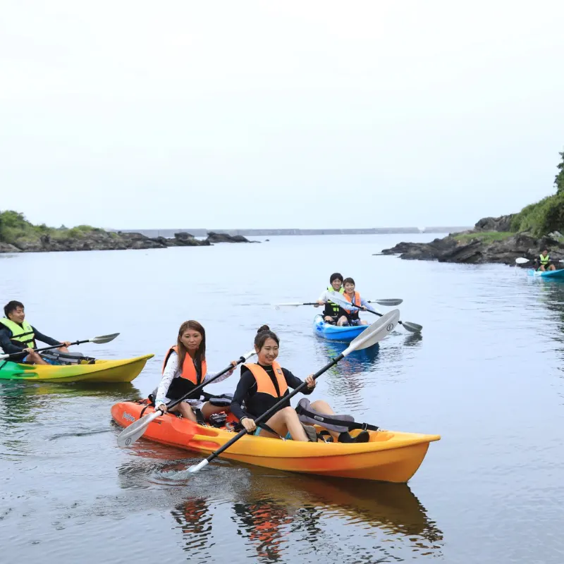
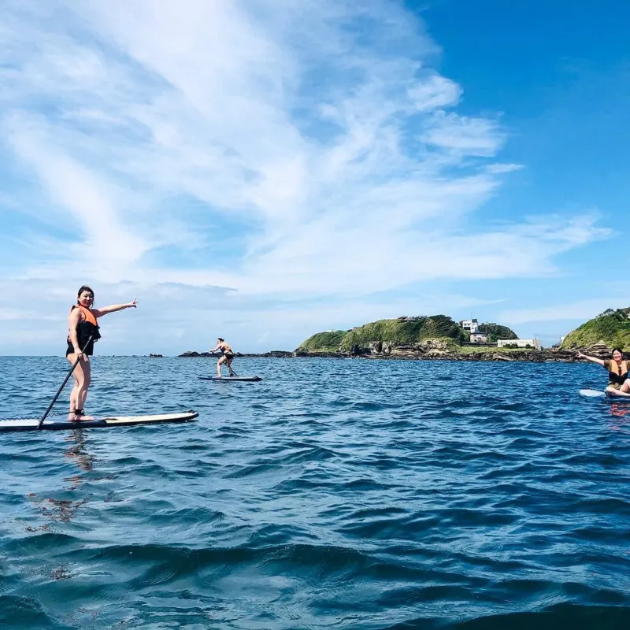
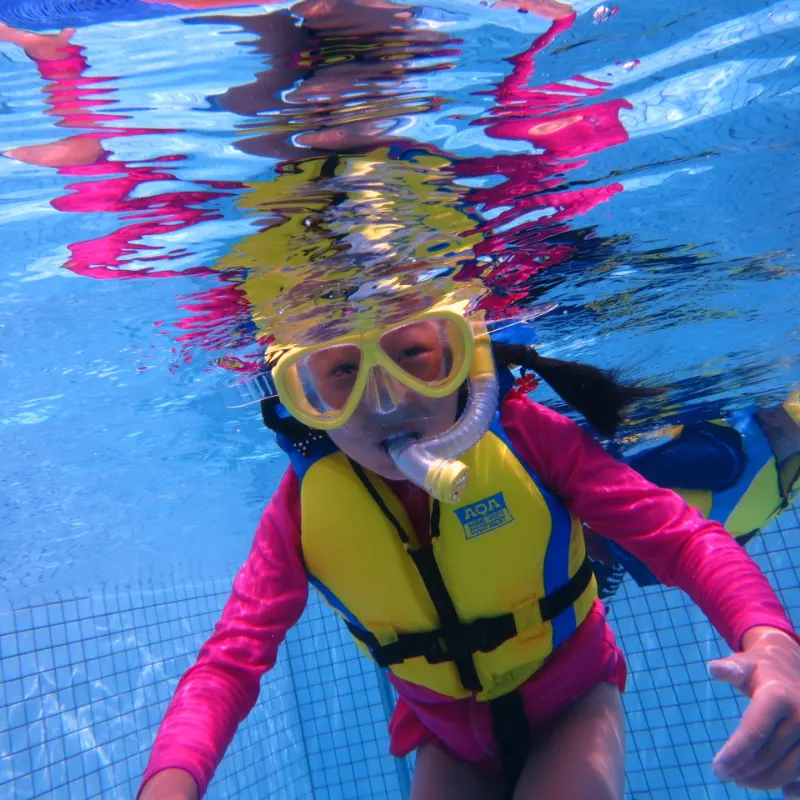

Activities
三浦半島のマリンアクティビティ一覧
現在はスノーケリングを中心に開催しています。SUP・シーカヤックは受け入れを一時中止中です。

シーカヤック
半日 ¥9,800/1名（税込）
現在、シーカヤックは受け入れを一時中止しています。再開時期や個別相談はお問い合わせください。
受付状況: 現在は通常予約を停止しています。再開希望・団体相談は一度お問い合わせください。
問い合わせる

SUP（スタンドアップパドル）
半日 ¥9,800/1名（税込）
現在、SUPは受け入れを一時中止しています。再開時期や個別相談はお問い合わせください。
受付状況: 現在は通常予約を停止しています。再開希望・団体相談は一度お問い合わせください。
問い合わせる

スノーケリング半日プラン
大人 ¥7,700（税込）
子ども ¥5,500（税込）
親子ペア ¥13,000（税込）
子ども ¥5,500（税込）
親子ペア ¥13,000（税込）
城ヶ島または三戸浜で開催。初心者や子ども連れの方も、浅場で練習してから海に入ります。
子ども料金: 小学生〜中学生。小学生は保護者同伴必須。未就学児は原則不可、または要相談。
注意: ウェットスーツが必要な時期は別途レンタル代がかかります。海に入る時間は当日の海況・体力により調整します。
予約する
注意: ウェットスーツが必要な時期は別途レンタル代がかかります。海に入る時間は当日の海況・体力により調整します。
Schedule
スノーケリング半日プランの流れ
午前の部 9:00〜12:00 / 午後の部 13:00〜16:00
午前の部
09:00 集合・受付
09:10 申込書確認、体調確認、着替え
09:30 器材合わせ・使い方説明
09:45 安全説明、海況説明、浅場で練習
10:00 スノーケリング開始
10:45〜11:00 海から上がる
11:00 片付け・シャワー・着替え
11:30〜12:00 解散
09:10 申込書確認、体調確認、着替え
09:30 器材合わせ・使い方説明
09:45 安全説明、海況説明、浅場で練習
10:00 スノーケリング開始
10:45〜11:00 海から上がる
11:00 片付け・シャワー・着替え
11:30〜12:00 解散
午後の部
13:00 集合・受付
13:10 申込書確認、体調確認、着替え
13:30 器材合わせ・使い方説明
13:45 安全説明、海況説明、浅場で練習
14:00 スノーケリング開始
14:45〜15:00 海から上がる
15:00 片付け・シャワー・着替え
15:30〜16:00 解散
13:10 申込書確認、体調確認、着替え
13:30 器材合わせ・使い方説明
13:45 安全説明、海況説明、浅場で練習
14:00 スノーケリング開始
14:45〜15:00 海から上がる
15:00 片付け・シャワー・着替え
15:30〜16:00 解散
海に入る時間は当日の海況・体力により調整します。
Location
開催場所について
スノーケリングは城ヶ島または三戸浜で開催します。海況により安全に楽しめる場所へ変更する場合があります。
📍 開催・集合場所
- 主な場所城ヶ島または三戸浜
- 集合場所ご予約後、当日の海況に合わせてご案内します。
- 対象スノーケリングのみ開催中です。
- 注意安全のため、風・波・透明度により開催場所や海に入る時間を調整します。
FAQ
マリンアクティビティのよくある質問
泳げなくても参加できますか？
はい！ライフジャケットを着用するので、泳ぎが苦手な方でも安心してご参加いただけます。
持ち物は何が必要ですか？
水着、タオル、着替えをお持ちください。スノーケリング器材とライフジャケットはこちらでご用意します。ウェットスーツが必要な時期は別途レンタル代がかかります。
雨天でも開催しますか？
小雨の場合は開催します。荒天・強風の場合は安全のため中止とさせていただく場合があります。その際はご連絡いたします。
何名から参加できますか？
各アクティビティとも最少2名からのご予約となります。お一人でのご参加希望の場合はご相談ください。
神奈川・三浦半島でスノーケリングを体験
三浦 海の学校では、ダイビングのほかにスノーケリング（シュノーケリング）も開催しています。ダイビングライセンス（Cカード）は不要で、初心者の方でも少人数制の丁寧なガイドで安心してお楽しみいただけます。SUP（スタンドアップパドル）とシーカヤックは現在受け入れを一時中止しています。
城ヶ島または三戸浜を中心に、当日の海況に合わせて安全に楽しめる場所をご案内します。海に入る時間は海況や体力により調整しますので、子ども連れや初心者の方もご相談ください。